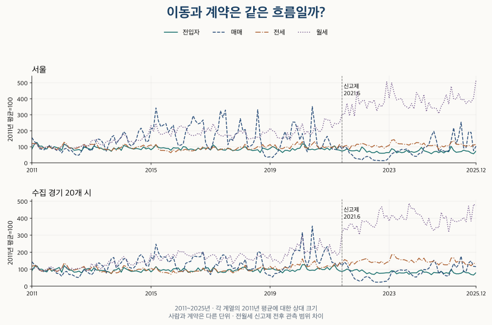
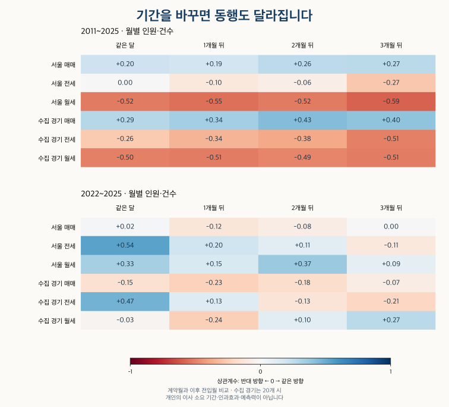

이사와 인구 · 전입과 계약의 시차
이사가 많으면 아파트 거래도 많을까? 월별 전입과 계약의 시차
서울·수집 경기의 월별 전입자와 매매·전세·월세 계약을 같은 달부터 3개월 뒤까지 비교합니다. 기간·계절 처리와 2021년 신고제 전후에 상관이 달라지는 이유를 확인하세요.
분석 기간 · 2011~2025 · 월별 비교 | 자료 기준일 · 계약 집계 2026-10-04 · 비교 검산 2026-10-15
이사철에 아파트 거래가 늘었다는 말을 들으면, 계약이 늘어난 뒤 몇 달 후 이사도 많아질 것 같습니다. 서울과 수집 경기의 월별 전입자 수를 매매·전세·월세 계약 수와 나란히 놓으면, 기간과 비교 방법에 따라 다른 답이 나옵니다.
서울 전세의 같은 달 상관은 2011~2025년 전체에서 0.00이지만, 2011~2020년에는 +0.41, 2022~2025년에는 +0.54입니다. 계약 뒤 1~3개월을 비교해도 지역·시장·기간을 가로지르는 일정한 관계는 나타나지 않았습니다. 개인의 이사 기간을 알아낸 결과도 아닙니다.
전입자 수와 계약 건수는 무엇이 다른가요?
전입자 수는 사람을, 계약 건수는 아파트 계약을 셉니다. 한 가족이 한 계약으로 이사하면 계약은 한 건이어도 이동자는 여러 명입니다. 갱신계약은 이사 없이 생길 수 있고, 매매계약 뒤에도 기존 세입자가 계속 살 수 있습니다.
국가데이터처의 국내인구이동통계는 전입신고를 바탕으로 읍면동 경계를 넘는 이동을 집계합니다. 아파트 밖 주거도 포함하고, 같은 읍면동 안 이사는 빠집니다. 전입신고 기반 월별 이동을 모든 실제 이삿날의 합계로 읽을 수는 없습니다. 여기서는 전입에서 전출을 뺀 순이동이 아니라 전체 전입자 수를 사용합니다.
계약은 계약월에 놓았습니다. 계약월과 신고월의 차이는 출처별 아파트 거래량 비교에서 구분한 기준을 따릅니다. 예를 들어 1월 계약 수와 3월 전입자 수를 비교하는 것이 ‘2개월 뒤’입니다. 두 달의 총계를 연결할 뿐 같은 사람의 계약과 이사를 찾아 연결한 것은 아닙니다.
서울은 전체 25개 구, 경기는 계약 자료를 수집한 36개 지역에 대응하는 20개 시입니다. 경기도 전체가 아니며, 시 안의 읍면동 간 전입도 포함합니다. 현재의 시 단위로 묶었지만 과거 모든 경계가 같았다고 검증한 것은 아닙니다. 지역 범위가 다른 두 숫자를 ‘경기 전체’라는 이름으로 합치지 않았습니다.
월별 전입과 계약은 같이 움직이나요?
긴 기간에서는 서로 다른 흐름이 섞입니다. 아래 그림은 각 계열의 2011년 월평균을 100으로 맞췄습니다. 원래 사람 수와 계약 수의 크기를 같다고 보는 그림이 아니라, 각자의 출발점에서 얼마나 변했는지 비교하는 그림입니다.

전입자가 줄어드는 긴 흐름과 기록된 월세 계약이 늘어나는 흐름을 한 번에 비교하면 음의 상관이 나올 수 있습니다. 서울 월세의 같은 달 상관은 전체 기간에서 −0.52입니다. 이를 ‘월세 계약이 늘어 이사가 줄었다’고 설명할 수는 없습니다.
임대차 자료에는 관측 방식의 변화도 있습니다. 2021년 6월 전월세 신고제가 시행되기 전후로 자료에 들어오는 계약의 범위가 달라질 수 있습니다. 계약구분을 적지 않은 기록도 포함했으며, 미기재를 신규계약으로 바꾸지 않았습니다. 제도와 기록의 차이는 신고제 전후 거래량 비교에서 자세히 볼 수 있습니다.
월별 전입자 수와 세 시장의 계약 건수 보기
전입은 명, 계약은 건입니다. 매매는 기존에 공개한 100건 단위 값입니다. 2010년은 전년 비교를 위한 참고 기간이며, 전월세의 빈칸은 0이 아닙니다.
| 월 | 전입자 | 매매 | 전세 | 월세 |
|---|---|---|---|---|
| 2010.01 | 121,063 | 4,800 | — | — |
| 2010.02 | 159,643 | 3,800 | — | — |
| 2010.03 | 190,443 | 3,900 | — | — |
| 2010.04 | 156,519 | 2,600 | — | — |
| 2010.05 | 145,051 | 2,100 | — | — |
| 2010.06 | 135,487 | 2,100 | — | — |
| 2010.07 | 128,872 | 2,200 | — | — |
| 2010.08 | 141,136 | 2,300 | — | — |
| 2010.09 | 120,210 | 2,800 | — | — |
| 2010.10 | 146,446 | 4,900 | — | — |
| 2010.11 | 144,395 | 6,100 | — | — |
| 2010.12 | 143,750 | 6,400 | — | — |
| 2011.01 | 124,125 | 7,100 | 12,233 | 2,490 |
| 2011.02 | 166,687 | 6,000 | 12,161 | 2,683 |
| 2011.03 | 182,847 | 5,400 | 11,978 | 2,741 |
| 2011.04 | 148,582 | 4,000 | 9,679 | 2,197 |
| 2011.05 | 149,942 | 3,800 | 9,192 | 2,140 |
| 2011.06 | 130,326 | 3,700 | 9,874 | 2,166 |
| 2011.07 | 123,680 | 4,300 | 9,601 | 2,280 |
| 2011.08 | 155,031 | 4,700 | 10,101 | 2,473 |
| 2011.09 | 128,148 | 4,100 | 9,134 | 2,328 |
| 2011.10 | 144,601 | 4,000 | 9,446 | 2,133 |
| 2011.11 | 136,035 | 3,500 | 8,174 | 1,807 |
| 2011.12 | 131,744 | 3,700 | 9,804 | 1,970 |
| 2012.01 | 111,997 | 2,800 | 10,384 | 2,265 |
| 2012.02 | 168,586 | 3,900 | 12,991 | 2,618 |
| 2012.03 | 153,149 | 4,100 | 11,815 | 2,554 |
| 2012.04 | 135,660 | 3,300 | 9,383 | 2,067 |
| 2012.05 | 133,247 | 3,500 | 9,323 | 2,022 |
| 2012.06 | 112,473 | 2,600 | 9,136 | 2,076 |
| 2012.07 | 115,200 | 2,100 | 9,165 | 2,210 |
| 2012.08 | 119,234 | 2,200 | 9,883 | 2,288 |
| 2012.09 | 105,895 | 3,300 | 10,547 | 2,362 |
| 2012.10 | 139,686 | 4,900 | 11,592 | 2,642 |
| 2012.11 | 134,791 | 4,300 | 10,026 | 2,453 |
| 2012.12 | 125,363 | 3,700 | 11,271 | 2,425 |
| 2013.01 | 118,477 | 3,400 | 11,702 | 3,173 |
| 2013.02 | 150,805 | 4,500 | 11,510 | 3,195 |
| 2013.03 | 138,507 | 6,600 | 12,306 | 3,333 |
| 2013.04 | 134,581 | 6,700 | 9,095 | 2,683 |
| 2013.05 | 130,619 | 6,300 | 8,669 | 2,559 |
| 2013.06 | 115,773 | 5,100 | 8,902 | 2,567 |
| 2013.07 | 118,420 | 3,300 | 8,233 | 3,031 |
| 2013.08 | 119,171 | 5,300 | 8,568 | 3,168 |
| 2013.09 | 103,009 | 7,200 | 7,283 | 2,793 |
| 2013.10 | 133,368 | 7,700 | 9,257 | 3,329 |
| 2013.11 | 119,741 | 5,300 | 7,802 | 2,925 |
| 2013.12 | 137,619 | 6,500 | 9,075 | 3,200 |
| 2014.01 | 111,094 | 7,200 | 9,721 | 3,715 |
| 2014.02 | 155,429 | 8,800 | 11,776 | 4,109 |
| 2014.03 | 148,117 | 8,000 | 11,391 | 3,748 |
| 2014.04 | 136,230 | 5,400 | 9,818 | 2,969 |
| 2014.05 | 129,645 | 4,800 | 9,249 | 3,103 |
| 2014.06 | 122,547 | 5,300 | 8,929 | 2,792 |
| 2014.07 | 128,364 | 6,400 | 9,773 | 3,198 |
| 2014.08 | 124,922 | 8,900 | 10,278 | 3,196 |
| 2014.09 | 117,715 | 9,800 | 10,321 | 3,193 |
| 2014.10 | 142,279 | 8,300 | 11,193 | 3,684 |
| 2014.11 | 124,299 | 5,900 | 9,581 | 3,697 |
| 2014.12 | 132,953 | 6,200 | 10,764 | 4,208 |
| 2015.01 | 116,958 | 9,600 | 11,240 | 5,298 |
| 2015.02 | 134,168 | 9,800 | 10,168 | 4,468 |
| 2015.03 | 160,393 | 15,500 | 11,562 | 5,618 |
| 2015.04 | 137,743 | 11,800 | 8,611 | 4,393 |
| 2015.05 | 132,359 | 10,200 | 7,807 | 4,019 |
| 2015.06 | 135,400 | 10,700 | 7,774 | 4,107 |
| 2015.07 | 130,033 | 11,100 | 7,693 | 4,361 |
| 2015.08 | 128,717 | 8,700 | 7,326 | 4,284 |
| 2015.09 | 112,803 | 9,700 | 6,380 | 3,801 |
| 2015.10 | 135,505 | 10,600 | 8,245 | 4,916 |
| 2015.11 | 132,012 | 7,200 | 6,932 | 4,146 |
| 2015.12 | 133,340 | 4,900 | 8,274 | 5,043 |
| 2016.01 | 113,095 | 5,000 | 7,651 | 5,295 |
| 2016.02 | 145,256 | 5,400 | 8,033 | 5,047 |
| 2016.03 | 140,880 | 8,800 | 8,625 | 5,077 |
| 2016.04 | 117,029 | 10,400 | 7,667 | 4,187 |
| 2016.05 | 123,743 | 10,800 | 7,557 | 3,937 |
| 2016.06 | 119,398 | 13,300 | 7,587 | 3,881 |
| 2016.07 | 110,156 | 11,800 | 8,246 | 3,942 |
| 2016.08 | 132,319 | 11,000 | 9,157 | 4,232 |
| 2016.09 | 117,840 | 11,300 | 8,472 | 3,939 |
| 2016.10 | 133,610 | 12,100 | 10,276 | 4,915 |
| 2016.11 | 130,166 | 5,700 | 8,340 | 4,341 |
| 2016.12 | 132,110 | 4,200 | 9,833 | 5,015 |
| 2017.01 | 114,655 | 3,700 | 8,134 | 4,498 |
| 2017.02 | 161,130 | 5,700 | 10,067 | 5,558 |
| 2017.03 | 143,477 | 8,600 | 9,652 | 4,885 |
| 2017.04 | 112,932 | 9,300 | 8,011 | 4,129 |
| 2017.05 | 124,132 | 14,700 | 8,422 | 3,887 |
| 2017.06 | 115,236 | 12,800 | 8,800 | 3,792 |
| 2017.07 | 113,098 | 14,900 | 8,771 | 3,992 |
| 2017.08 | 132,940 | 5,100 | 8,984 | 3,834 |
| 2017.09 | 120,252 | 6,900 | 8,868 | 3,981 |
| 2017.10 | 109,323 | 6,300 | 7,525 | 3,361 |
| 2017.11 | 114,057 | 8,100 | 8,216 | 4,089 |
| 2017.12 | 111,705 | 8,500 | 9,397 | 4,222 |
| 2018.01 | 119,120 | 12,500 | 9,995 | 4,636 |
| 2018.02 | 135,440 | 9,100 | 9,402 | 4,231 |
| 2018.03 | 144,160 | 9,400 | 12,049 | 4,576 |
| 2018.04 | 117,443 | 4,500 | 8,460 | 3,396 |
| 2018.05 | 117,278 | 4,700 | 8,476 | 3,433 |
| 2018.06 | 109,139 | 5,200 | 8,696 | 3,519 |
| 2018.07 | 112,580 | 7,000 | 9,084 | 3,590 |
| 2018.08 | 117,300 | 15,000 | 10,224 | 3,671 |
| 2018.09 | 92,262 | 7,200 | 9,940 | 3,639 |
| 2018.10 | 132,111 | 3,300 | 11,555 | 4,378 |
| 2018.11 | 125,350 | 1,800 | 9,488 | 4,208 |
| 2018.12 | 117,524 | 1,600 | 10,591 | 4,458 |
| 2019.01 | 128,937 | 1,700 | 11,562 | 4,923 |
| 2019.02 | 146,401 | 1,500 | 10,019 | 4,580 |
| 2019.03 | 135,592 | 2,300 | 11,351 | 4,411 |
| 2019.04 | 118,129 | 3,000 | 8,676 | 3,568 |
| 2019.05 | 110,881 | 4,400 | 9,027 | 3,516 |
| 2019.06 | 91,828 | 6,800 | 8,937 | 3,497 |
| 2019.07 | 111,288 | 8,800 | 9,752 | 3,570 |
| 2019.08 | 110,592 | 6,600 | 9,941 | 4,283 |
| 2019.09 | 103,969 | 7,000 | 8,921 | 3,203 |
| 2019.10 | 128,067 | 11,500 | 11,641 | 4,094 |
| 2019.11 | 113,012 | 11,500 | 11,385 | 4,314 |
| 2019.12 | 127,797 | 9,500 | 13,235 | 5,334 |
| 2020.01 | 131,105 | 6,500 | 11,138 | 4,649 |
| 2020.02 | 170,587 | 8,300 | 13,393 | 5,590 |
| 2020.03 | 164,402 | 4,500 | 9,714 | 4,005 |
| 2020.04 | 127,208 | 3,100 | 9,245 | 4,552 |
| 2020.05 | 117,734 | 5,600 | 10,226 | 4,064 |
| 2020.06 | 122,292 | 15,900 | 11,863 | 4,135 |
| 2020.07 | 115,625 | 10,800 | 13,391 | 5,200 |
| 2020.08 | 123,804 | 5,000 | 10,442 | 4,778 |
| 2020.09 | 127,908 | 3,800 | 8,741 | 4,373 |
| 2020.10 | 126,788 | 4,400 | 10,497 | 4,831 |
| 2020.11 | 117,563 | 6,400 | 9,508 | 6,336 |
| 2020.12 | 133,111 | 7,500 | 10,394 | 6,089 |
| 2021.01 | 114,415 | 5,800 | 10,099 | 6,114 |
| 2021.02 | 141,936 | 3,900 | 9,481 | 4,961 |
| 2021.03 | 151,617 | 3,800 | 10,763 | 5,647 |
| 2021.04 | 117,475 | 3,700 | 9,137 | 5,523 |
| 2021.05 | 112,967 | 4,900 | 11,555 | 5,706 |
| 2021.06 | 104,704 | 3,900 | 9,758 | 6,913 |
| 2021.07 | 111,646 | 4,700 | 10,562 | 6,946 |
| 2021.08 | 125,161 | 4,100 | 10,994 | 8,470 |
| 2021.09 | 110,490 | 2,700 | 8,590 | 6,702 |
| 2021.10 | 107,123 | 2,300 | 11,180 | 8,354 |
| 2021.11 | 108,106 | 1,400 | 10,383 | 6,648 |
| 2021.12 | 112,547 | 1,100 | 11,816 | 10,199 |
| 2022.01 | 100,675 | 1,100 | 11,525 | 8,336 |
| 2022.02 | 142,156 | 800 | 12,307 | 8,843 |
| 2022.03 | 122,917 | 1,500 | 11,862 | 8,903 |
| 2022.04 | 95,228 | 1,800 | 11,086 | 7,727 |
| 2022.05 | 104,657 | 1,700 | 10,985 | 8,810 |
| 2022.06 | 91,205 | 1,000 | 9,898 | 8,541 |
| 2022.07 | 90,743 | 700 | 11,011 | 8,966 |
| 2022.08 | 103,288 | 700 | 10,757 | 7,388 |
| 2022.09 | 86,938 | 600 | 9,867 | 8,346 |
| 2022.10 | 85,408 | 600 | 10,483 | 7,993 |
| 2022.11 | 85,979 | 600 | 9,198 | 8,635 |
| 2022.12 | 92,333 | 800 | 10,373 | 11,541 |
| 2023.01 | 91,225 | 1,500 | 11,007 | 9,215 |
| 2023.02 | 126,733 | 2,500 | 14,246 | 11,441 |
| 2023.03 | 116,723 | 2,900 | 14,629 | 9,939 |
| 2023.04 | 89,745 | 3,200 | 12,468 | 8,965 |
| 2023.05 | 99,323 | 3,400 | 12,007 | 9,096 |
| 2023.06 | 90,971 | 3,800 | 11,975 | 9,167 |
| 2023.07 | 94,517 | 3,700 | 11,650 | 8,217 |
| 2023.08 | 111,712 | 3,900 | 11,654 | 7,995 |
| 2023.09 | 93,071 | 3,400 | 11,151 | 7,717 |
| 2023.10 | 100,287 | 2,400 | 12,322 | 8,451 |
| 2023.11 | 93,060 | 1,900 | 11,779 | 7,704 |
| 2023.12 | 99,596 | 1,800 | 12,835 | 10,026 |
| 2024.01 | 111,217 | 2,600 | 12,645 | 9,475 |
| 2024.02 | 138,040 | 2,600 | 11,283 | 8,487 |
| 2024.03 | 108,484 | 4,300 | 12,446 | 9,736 |
| 2024.04 | 100,781 | 4,500 | 10,282 | 7,318 |
| 2024.05 | 93,236 | 5,200 | 10,956 | 8,633 |
| 2024.06 | 81,182 | 7,600 | 10,771 | 7,783 |
| 2024.07 | 98,177 | 8,900 | 11,148 | 7,835 |
| 2024.08 | 103,290 | 6,400 | 11,112 | 7,743 |
| 2024.09 | 90,902 | 3,100 | 8,507 | 7,026 |
| 2024.10 | 103,285 | 3,800 | 10,687 | 8,077 |
| 2024.11 | 88,334 | 3,300 | 10,045 | 8,653 |
| 2024.12 | 104,452 | 3,200 | 10,973 | 9,729 |
| 2025.01 | 99,146 | 3,400 | 10,591 | 8,372 |
| 2025.02 | 147,145 | 6,400 | 13,065 | 10,913 |
| 2025.03 | 110,859 | 9,900 | 13,930 | 9,116 |
| 2025.04 | 94,161 | 5,300 | 11,770 | 9,081 |
| 2025.05 | 97,498 | 7,500 | 11,542 | 9,907 |
| 2025.06 | 99,889 | 11,500 | 11,864 | 8,948 |
| 2025.07 | 113,118 | 4,200 | 11,063 | 9,105 |
| 2025.08 | 105,882 | 4,300 | 10,445 | 8,447 |
| 2025.09 | 103,709 | 8,700 | 11,110 | 8,864 |
| 2025.10 | 88,184 | 8,600 | 10,290 | 8,653 |
| 2025.11 | 80,414 | 3,400 | 11,260 | 9,234 |
| 2025.12 | 104,923 | 4,700 | 11,565 | 11,804 |
| 월 | 전입자 | 매매 | 전세 | 월세 |
|---|---|---|---|---|
| 2010.01 | 135,587 | 7,800 | — | — |
| 2010.02 | 175,247 | 6,200 | — | — |
| 2010.03 | 192,478 | 7,400 | — | — |
| 2010.04 | 159,758 | 5,200 | — | — |
| 2010.05 | 151,264 | 4,700 | — | — |
| 2010.06 | 139,365 | 4,400 | — | — |
| 2010.07 | 136,286 | 4,400 | — | — |
| 2010.08 | 149,592 | 4,900 | — | — |
| 2010.09 | 124,495 | 5,900 | — | — |
| 2010.10 | 154,443 | 9,700 | — | — |
| 2010.11 | 164,918 | 9,800 | — | — |
| 2010.12 | 161,787 | 10,400 | — | — |
| 2011.01 | 136,175 | 12,800 | 11,931 | 2,995 |
| 2011.02 | 168,013 | 11,300 | 12,149 | 3,112 |
| 2011.03 | 177,732 | 10,500 | 11,760 | 3,308 |
| 2011.04 | 147,495 | 8,500 | 9,663 | 2,818 |
| 2011.05 | 148,312 | 8,000 | 8,880 | 2,585 |
| 2011.06 | 132,933 | 7,600 | 9,384 | 2,812 |
| 2011.07 | 124,467 | 8,200 | 9,465 | 2,905 |
| 2011.08 | 155,780 | 9,500 | 10,311 | 3,327 |
| 2011.09 | 130,428 | 9,300 | 9,414 | 3,362 |
| 2011.10 | 143,347 | 8,200 | 9,895 | 3,037 |
| 2011.11 | 152,310 | 6,700 | 8,603 | 2,568 |
| 2011.12 | 163,782 | 6,600 | 9,671 | 2,615 |
| 2012.01 | 120,780 | 5,200 | 10,574 | 3,155 |
| 2012.02 | 180,418 | 7,400 | 13,721 | 3,431 |
| 2012.03 | 156,959 | 7,800 | 12,613 | 3,339 |
| 2012.04 | 140,290 | 6,100 | 10,138 | 2,834 |
| 2012.05 | 139,624 | 6,200 | 9,829 | 3,116 |
| 2012.06 | 122,401 | 5,400 | 9,582 | 2,839 |
| 2012.07 | 124,161 | 4,700 | 9,975 | 3,118 |
| 2012.08 | 131,806 | 4,600 | 10,409 | 3,023 |
| 2012.09 | 114,877 | 6,700 | 10,922 | 3,231 |
| 2012.10 | 147,358 | 8,800 | 11,763 | 3,234 |
| 2012.11 | 149,376 | 7,700 | 9,383 | 2,823 |
| 2012.12 | 154,783 | 6,800 | 9,736 | 2,677 |
| 2013.01 | 131,360 | 6,000 | 11,156 | 3,933 |
| 2013.02 | 159,928 | 7,300 | 11,362 | 3,410 |
| 2013.03 | 141,043 | 11,100 | 11,769 | 3,949 |
| 2013.04 | 139,779 | 12,300 | 8,993 | 3,235 |
| 2013.05 | 136,597 | 11,200 | 8,400 | 3,011 |
| 2013.06 | 135,365 | 10,000 | 8,749 | 3,710 |
| 2013.07 | 131,111 | 6,900 | 8,222 | 3,524 |
| 2013.08 | 124,942 | 11,000 | 8,456 | 4,302 |
| 2013.09 | 109,186 | 14,400 | 7,519 | 3,976 |
| 2013.10 | 140,213 | 15,100 | 9,456 | 4,289 |
| 2013.11 | 142,458 | 9,600 | 7,835 | 3,433 |
| 2013.12 | 159,104 | 11,100 | 8,265 | 4,329 |
| 2014.01 | 121,963 | 12,400 | 9,771 | 4,737 |
| 2014.02 | 163,712 | 14,400 | 12,216 | 5,143 |
| 2014.03 | 150,524 | 14,400 | 11,717 | 4,540 |
| 2014.04 | 139,245 | 10,100 | 9,872 | 4,021 |
| 2014.05 | 129,355 | 9,500 | 9,294 | 3,708 |
| 2014.06 | 130,811 | 9,600 | 9,073 | 3,678 |
| 2014.07 | 134,083 | 11,000 | 9,626 | 4,208 |
| 2014.08 | 127,718 | 15,500 | 10,104 | 4,019 |
| 2014.09 | 119,790 | 16,600 | 9,972 | 4,168 |
| 2014.10 | 143,993 | 14,900 | 10,999 | 4,323 |
| 2014.11 | 133,654 | 10,900 | 9,296 | 3,737 |
| 2014.12 | 148,811 | 10,400 | 9,660 | 4,208 |
| 2015.01 | 124,839 | 15,100 | 10,805 | 5,616 |
| 2015.02 | 143,541 | 14,200 | 9,693 | 4,469 |
| 2015.03 | 171,151 | 22,100 | 11,517 | 5,629 |
| 2015.04 | 144,877 | 17,600 | 9,209 | 4,783 |
| 2015.05 | 136,844 | 15,300 | 8,353 | 4,362 |
| 2015.06 | 145,032 | 15,400 | 8,077 | 4,929 |
| 2015.07 | 138,837 | 15,300 | 8,152 | 5,205 |
| 2015.08 | 143,369 | 12,600 | 7,753 | 5,520 |
| 2015.09 | 128,801 | 13,400 | 7,060 | 4,662 |
| 2015.10 | 151,596 | 15,400 | 9,135 | 5,545 |
| 2015.11 | 152,931 | 10,300 | 7,533 | 5,029 |
| 2015.12 | 159,156 | 7,500 | 8,590 | 6,170 |
| 2016.01 | 129,597 | 7,900 | 8,874 | 5,915 |
| 2016.02 | 153,731 | 7,700 | 8,811 | 6,061 |
| 2016.03 | 147,419 | 12,000 | 9,773 | 5,523 |
| 2016.04 | 120,124 | 12,700 | 8,591 | 5,366 |
| 2016.05 | 130,811 | 13,000 | 7,995 | 5,181 |
| 2016.06 | 128,535 | 15,700 | 8,613 | 5,422 |
| 2016.07 | 132,104 | 15,700 | 8,977 | 5,614 |
| 2016.08 | 159,496 | 15,400 | 8,964 | 5,805 |
| 2016.09 | 133,535 | 15,500 | 8,952 | 5,809 |
| 2016.10 | 149,875 | 18,200 | 10,776 | 5,818 |
| 2016.11 | 159,446 | 10,000 | 8,913 | 4,644 |
| 2016.12 | 160,577 | 7,600 | 9,494 | 5,051 |
| 2017.01 | 126,796 | 6,100 | 8,246 | 5,304 |
| 2017.02 | 161,070 | 8,900 | 10,698 | 5,506 |
| 2017.03 | 148,573 | 11,600 | 10,176 | 5,331 |
| 2017.04 | 117,710 | 10,900 | 8,340 | 4,341 |
| 2017.05 | 126,276 | 14,800 | 8,401 | 4,113 |
| 2017.06 | 119,905 | 16,500 | 8,958 | 4,890 |
| 2017.07 | 121,474 | 16,100 | 9,086 | 4,925 |
| 2017.08 | 144,545 | 10,800 | 9,150 | 4,708 |
| 2017.09 | 146,525 | 11,500 | 9,103 | 5,342 |
| 2017.10 | 127,769 | 9,300 | 7,902 | 3,876 |
| 2017.11 | 140,205 | 9,600 | 8,617 | 4,569 |
| 2017.12 | 142,231 | 9,100 | 9,072 | 5,184 |
| 2018.01 | 151,706 | 12,600 | 10,525 | 5,690 |
| 2018.02 | 165,078 | 11,500 | 9,849 | 5,514 |
| 2018.03 | 164,295 | 14,000 | 12,481 | 5,105 |
| 2018.04 | 137,956 | 8,400 | 9,197 | 4,652 |
| 2018.05 | 142,770 | 8,800 | 9,077 | 4,668 |
| 2018.06 | 127,354 | 9,100 | 9,467 | 4,465 |
| 2018.07 | 138,185 | 9,300 | 9,700 | 4,844 |
| 2018.08 | 147,668 | 18,100 | 10,327 | 5,391 |
| 2018.09 | 117,931 | 17,800 | 10,974 | 5,076 |
| 2018.10 | 158,521 | 12,000 | 12,220 | 5,677 |
| 2018.11 | 153,083 | 7,000 | 9,951 | 5,196 |
| 2018.12 | 148,462 | 5,900 | 10,283 | 4,793 |
| 2019.01 | 149,202 | 5,700 | 11,785 | 5,488 |
| 2019.02 | 154,105 | 4,800 | 10,467 | 4,381 |
| 2019.03 | 143,048 | 6,700 | 11,722 | 4,665 |
| 2019.04 | 139,549 | 6,700 | 9,558 | 4,362 |
| 2019.05 | 135,260 | 7,500 | 9,818 | 4,005 |
| 2019.06 | 115,905 | 8,500 | 10,273 | 4,361 |
| 2019.07 | 140,270 | 10,300 | 11,207 | 5,543 |
| 2019.08 | 141,404 | 9,400 | 10,946 | 5,247 |
| 2019.09 | 128,961 | 10,400 | 9,969 | 6,663 |
| 2019.10 | 139,837 | 16,200 | 12,952 | 6,556 |
| 2019.11 | 128,419 | 18,900 | 12,140 | 6,134 |
| 2019.12 | 143,523 | 19,000 | 12,989 | 7,335 |
| 2020.01 | 145,034 | 18,600 | 12,504 | 7,019 |
| 2020.02 | 188,201 | 28,300 | 16,240 | 8,843 |
| 2020.03 | 186,540 | 14,200 | 12,651 | 5,750 |
| 2020.04 | 146,231 | 10,800 | 11,553 | 6,076 |
| 2020.05 | 136,960 | 14,800 | 11,991 | 5,847 |
| 2020.06 | 140,293 | 31,600 | 13,842 | 6,598 |
| 2020.07 | 137,563 | 20,200 | 15,047 | 7,150 |
| 2020.08 | 154,392 | 12,600 | 11,522 | 6,285 |
| 2020.09 | 156,517 | 12,000 | 10,055 | 8,264 |
| 2020.10 | 145,130 | 15,700 | 11,277 | 6,913 |
| 2020.11 | 145,554 | 19,100 | 11,221 | 6,648 |
| 2020.12 | 164,694 | 20,800 | 12,109 | 6,093 |
| 2021.01 | 143,204 | 16,400 | 11,830 | 7,207 |
| 2021.02 | 170,324 | 12,400 | 11,483 | 5,661 |
| 2021.03 | 182,407 | 12,400 | 13,367 | 6,095 |
| 2021.04 | 147,179 | 10,300 | 11,501 | 5,390 |
| 2021.05 | 132,999 | 12,400 | 13,689 | 5,756 |
| 2021.06 | 129,311 | 10,800 | 13,903 | 9,370 |
| 2021.07 | 136,217 | 12,700 | 15,794 | 10,095 |
| 2021.08 | 149,573 | 11,300 | 15,061 | 9,743 |
| 2021.09 | 139,941 | 8,400 | 12,272 | 10,773 |
| 2021.10 | 132,344 | 6,400 | 14,775 | 10,837 |
| 2021.11 | 141,576 | 3,900 | 13,159 | 9,900 |
| 2021.12 | 146,240 | 3,300 | 14,580 | 10,506 |
| 2022.01 | 129,267 | 2,700 | 15,113 | 8,975 |
| 2022.02 | 142,395 | 3,000 | 15,583 | 11,354 |
| 2022.03 | 126,086 | 4,600 | 16,043 | 11,204 |
| 2022.04 | 108,549 | 5,100 | 16,425 | 11,330 |
| 2022.05 | 117,932 | 4,600 | 14,581 | 10,851 |
| 2022.06 | 105,525 | 3,200 | 14,039 | 10,456 |
| 2022.07 | 102,930 | 2,200 | 14,537 | 10,193 |
| 2022.08 | 121,053 | 2,100 | 14,305 | 10,982 |
| 2022.09 | 111,995 | 2,100 | 13,736 | 13,192 |
| 2022.10 | 113,152 | 2,200 | 14,786 | 13,792 |
| 2022.11 | 114,664 | 2,500 | 13,156 | 11,909 |
| 2022.12 | 117,335 | 2,600 | 14,123 | 12,337 |
| 2023.01 | 116,804 | 4,100 | 14,666 | 11,334 |
| 2023.02 | 135,438 | 7,400 | 18,685 | 12,362 |
| 2023.03 | 131,148 | 7,800 | 18,616 | 12,085 |
| 2023.04 | 107,859 | 7,800 | 16,553 | 11,494 |
| 2023.05 | 116,845 | 8,500 | 16,081 | 11,676 |
| 2023.06 | 114,896 | 8,500 | 15,560 | 12,342 |
| 2023.07 | 114,814 | 8,200 | 15,732 | 11,614 |
| 2023.08 | 123,031 | 8,600 | 15,177 | 11,582 |
| 2023.09 | 103,771 | 7,700 | 14,328 | 14,400 |
| 2023.10 | 116,340 | 6,100 | 15,476 | 13,438 |
| 2023.11 | 116,705 | 4,900 | 14,043 | 13,552 |
| 2023.12 | 115,994 | 4,800 | 14,657 | 12,565 |
| 2024.01 | 133,446 | 6,600 | 16,673 | 12,522 |
| 2024.02 | 141,459 | 6,400 | 15,128 | 12,158 |
| 2024.03 | 122,202 | 8,800 | 16,651 | 11,168 |
| 2024.04 | 122,861 | 8,600 | 14,149 | 10,551 |
| 2024.05 | 115,689 | 9,400 | 14,430 | 11,786 |
| 2024.06 | 100,629 | 11,800 | 14,437 | 10,172 |
| 2024.07 | 120,333 | 13,600 | 15,002 | 9,647 |
| 2024.08 | 117,372 | 11,400 | 14,119 | 10,254 |
| 2024.09 | 115,747 | 6,500 | 12,590 | 10,182 |
| 2024.10 | 128,225 | 8,000 | 14,288 | 12,824 |
| 2024.11 | 109,583 | 6,100 | 12,754 | 11,700 |
| 2024.12 | 118,091 | 5,400 | 12,685 | 12,174 |
| 2025.01 | 111,729 | 5,400 | 12,815 | 9,390 |
| 2025.02 | 146,530 | 8,600 | 16,729 | 11,785 |
| 2025.03 | 116,430 | 11,900 | 16,839 | 11,341 |
| 2025.04 | 108,243 | 9,800 | 14,179 | 11,194 |
| 2025.05 | 108,402 | 11,300 | 14,818 | 11,327 |
| 2025.06 | 113,236 | 15,800 | 14,490 | 11,497 |
| 2025.07 | 128,543 | 7,700 | 14,332 | 11,933 |
| 2025.08 | 117,793 | 7,700 | 12,534 | 11,208 |
| 2025.09 | 116,815 | 12,200 | 13,142 | 13,926 |
| 2025.10 | 101,626 | 13,300 | 12,124 | 11,320 |
| 2025.11 | 97,351 | 10,400 | 13,633 | 14,211 |
| 2025.12 | 118,105 | 10,300 | 13,238 | 14,021 |
계약 뒤 1~3개월을 보면 관계가 더 뚜렷한가요?
모든 시장에서 같은 시차가 두드러지지는 않습니다. 상관계수는 −1에서 +1 사이입니다. +1에 가까울수록 함께 커지고 작아지는 관계, −1에 가까울수록 반대로 움직이는 관계가 강합니다. 0에 가까운 값은 이 방식으로 본 직선적인 동행이 약하다는 뜻입니다.
| 지역·계약 | 같은 달 | 1개월 뒤 | 2개월 뒤 | 3개월 뒤 | 비교한 월 쌍 수¹ |
|---|---|---|---|---|---|
| 서울 매매 | +0.20 | +0.19 | +0.26 | +0.27 | 180/179/178/177 |
| 서울 전세 | 0.00 | -0.10 | -0.06 | -0.27 | 180/179/178/177 |
| 서울 월세 | -0.52 | -0.55 | -0.52 | -0.59 | 180/179/178/177 |
| 수집 경기 20개 시 매매 | +0.29 | +0.34 | +0.43 | +0.40 | 180/179/178/177 |
| 수집 경기 20개 시 전세 | -0.26 | -0.34 | -0.38 | -0.51 | 180/179/178/177 |
| 수집 경기 20개 시 월세 | -0.50 | -0.51 | -0.49 | -0.51 | 180/179/178/177 |
¹ 월 쌍 수는 같은 달 / 1개월 뒤 / 2개월 뒤 / 3개월 뒤 순서입니다. 양쪽 달이 모두 해당 기간 안에 들어가는 경우만 비교해, 시차가 길어지면 끝부분의 짝이 줄어듭니다. 상관계수는 비율(%)이 아닙니다.
수집 경기 매매는 같은 달 +0.29에서 2개월 뒤 +0.43으로 커집니다. 그러나 서울 매매는 2개월 뒤 +0.26, 3개월 뒤 +0.27로 비슷합니다. 전세·월세에서는 다른 모양이 나타납니다. 가장 큰 숫자 하나를 골라 ‘계약 후 이사까지 평균 두 달’이라고 읽으면 개인의 이력을 관측하지 않았다는 한계를 놓치게 됩니다.

계약 뒤 이동이 뒤따르는 경우가 많다는 설명 자체는 자연스럽습니다. 다만 이 자료에는 비아파트 이동, 이사 없는 갱신, 투자 목적 매매 등이 섞여 있습니다. 실제 연결이 일부 존재하더라도 두 지역 총계의 상관만으로 그 비중이나 소요 기간을 알아낼 수는 없습니다.
기간과 계절을 바꾸면 왜 답이 달라지나요?
함께 움직인다는 결과가 어느 기간에 나타나는지 먼저 확인해야 합니다. 신고제 전후 비교는 2011~2020년과 2022~2025년으로 나눴고, 제도가 바뀐 2021년은 이 두 구간에서 분리했습니다. 전체 기간 표에는 2021년을 그대로 포함했습니다.
| 지역·계약 | 같은 달 | 1개월 뒤 | 2개월 뒤 | 3개월 뒤 | 비교한 월 쌍 수¹ |
|---|---|---|---|---|---|
| 서울 매매 | -0.09 | -0.09 | +0.03 | -0.01 | 120/119/118/117 |
| 서울 전세 | +0.41 | +0.32 | +0.40 | +0.09 | 120/119/118/117 |
| 서울 월세 | +0.03 | -0.01 | +0.03 | -0.12 | 120/119/118/117 |
| 수집 경기 20개 시 매매 | +0.10 | +0.17 | +0.29 | +0.18 | 120/119/118/117 |
| 수집 경기 20개 시 전세 | +0.42 | +0.32 | +0.27 | -0.04 | 120/119/118/117 |
| 수집 경기 20개 시 월세 | +0.21 | +0.21 | +0.25 | +0.16 | 120/119/118/117 |
| 지역·계약 | 같은 달 | 1개월 뒤 | 2개월 뒤 | 3개월 뒤 | 비교한 월 쌍 수¹ |
|---|---|---|---|---|---|
| 서울 매매 | +0.02 | -0.12 | -0.08 | 0.00 | 48/47/46/45 |
| 서울 전세 | +0.54 | +0.20 | +0.11 | -0.11 | 48/47/46/45 |
| 서울 월세 | +0.33 | +0.15 | +0.37 | +0.09 | 48/47/46/45 |
| 수집 경기 20개 시 매매 | -0.15 | -0.23 | -0.18 | -0.07 | 48/47/46/45 |
| 수집 경기 20개 시 전세 | +0.47 | +0.13 | -0.13 | -0.21 | 48/47/46/45 |
| 수집 경기 20개 시 월세 | -0.03 | -0.24 | +0.10 | +0.27 | 48/47/46/45 |
서울 전세의 같은 달 상관은 앞 기간 +0.41, 뒤 기간 +0.54인데, 둘을 포함한 15년 전체에서는 0.00입니다. 서울 월세도 전체 −0.52와 뒤 기간 +0.33의 방향이 다릅니다. 같은 기간 안에서 함께 오르내리는 모습과 서로 다른 시기의 수준 차이가 한 숫자에 섞일 수 있다는 사례입니다. 신고제만의 효과를 분리한 결과는 아닙니다.
계절성과 긴 추세에 얼마나 영향을 받는지도 살폈습니다. 첫째는 각 달에서 12개월 전 수치를 뺀 변화량을 비교하는 방법입니다. 둘째는 분석 기간 안에서 같은 달력월의 평균을 빼는 방법입니다. 예를 들어 3월 수치에서 그 기간의 여러 3월 평균을 뺍니다. 두 번째 방법은 공식 계절조정이 아니며 장기 추세나 모든 공통 요인을 제거하지도 않습니다.
| 지역·계약 | 같은 달 | 1개월 뒤 | 2개월 뒤 | 3개월 뒤 | 비교한 월 쌍 수¹ |
|---|---|---|---|---|---|
| 서울 매매 | +0.23 | +0.18 | +0.43 | +0.48 | 180/179/178/177 |
| 서울 전세 | +0.24 | +0.14 | +0.24 | +0.21 | 168/167/166/165 |
| 서울 월세 | -0.04 | -0.15 | -0.13 | -0.21 | 168/167/166/165 |
| 수집 경기 20개 시 매매 | +0.37 | +0.40 | +0.54 | +0.54 | 180/179/178/177 |
| 수집 경기 20개 시 전세 | +0.07 | -0.03 | -0.05 | -0.06 | 168/167/166/165 |
| 수집 경기 20개 시 월세 | -0.08 | -0.22 | -0.14 | -0.20 | 168/167/166/165 |
| 지역·계약 | 같은 달 | 1개월 뒤 | 2개월 뒤 | 3개월 뒤 | 비교한 월 쌍 수¹ |
|---|---|---|---|---|---|
| 서울 매매 | +0.29 | +0.32 | +0.42 | +0.46 | 180/179/178/177 |
| 서울 전세 | -0.35 | -0.33 | -0.26 | -0.30 | 180/179/178/177 |
| 서울 월세 | -0.74 | -0.75 | -0.73 | -0.76 | 180/179/178/177 |
| 수집 경기 20개 시 매매 | +0.38 | +0.47 | +0.57 | +0.56 | 180/179/178/177 |
| 수집 경기 20개 시 전세 | -0.48 | -0.48 | -0.46 | -0.50 | 180/179/178/177 |
| 수집 경기 20개 시 월세 | -0.62 | -0.64 | -0.61 | -0.62 | 180/179/178/177 |
서울 월세의 같은 달 상관은 원래 수치에서 −0.52, 전년 같은 달과의 차이에서 −0.04, 같은 달력월 평균을 뺀 값에서 −0.74입니다. 한 가지 처리 결과를 ‘순수한 이사 수요’라고 부를 수 없는 이유입니다. 매매의 100건 단위 표시 오차도 남으므로 서로 비슷한 상관계수의 순위를 확정하지 않습니다.
2022년의 전년 차이는 2021년을 참조합니다. 이 전환기의 영향을 더 살피려고 2023~2025년만의 비교도 따로 계산했습니다. 수집 경기 매매와 2개월 뒤 전입의 전년 차이 상관은 2022~2025년 +0.75에서 2023~2025년 +0.17로 달라집니다. 짧아진 기간의 차이를 어떤 정책의 효과로 해석하거나, 뒤 결과로 앞 결과를 교체하지 않았습니다.
기간·변환별 나머지 비교 모두 보기
각 표의 마지막 열은 네 시차의 실제 월 쌍 수입니다. 전년 값이 없는 전월세 초기 기간은 비교에서 빠집니다. 시작 시점과 표본 수가 다른 결과를 같은 조건의 반복 실험으로 읽지 않습니다.
| 지역·계약 | 같은 달 | 1개월 뒤 | 2개월 뒤 | 3개월 뒤 | 비교한 월 쌍 수¹ |
|---|---|---|---|---|---|
| 서울 매매 | +0.11 | +0.10 | +0.41 | +0.37 | 120/119/118/117 |
| 서울 전세 | +0.28 | +0.18 | +0.28 | +0.18 | 108/107/106/105 |
| 서울 월세 | +0.46 | +0.21 | +0.33 | +0.16 | 108/107/106/105 |
| 수집 경기 20개 시 매매 | +0.26 | +0.30 | +0.47 | +0.38 | 120/119/118/117 |
| 수집 경기 20개 시 전세 | +0.24 | +0.13 | +0.16 | +0.08 | 108/107/106/105 |
| 수집 경기 20개 시 월세 | +0.42 | +0.25 | +0.34 | +0.27 | 108/107/106/105 |
| 지역·계약 | 같은 달 | 1개월 뒤 | 2개월 뒤 | 3개월 뒤 | 비교한 월 쌍 수¹ |
|---|---|---|---|---|---|
| 서울 매매 | -0.09 | -0.03 | +0.18 | +0.17 | 120/119/118/117 |
| 서울 전세 | +0.18 | +0.20 | +0.33 | +0.22 | 120/119/118/117 |
| 서울 월세 | -0.22 | -0.26 | -0.21 | -0.24 | 120/119/118/117 |
| 수집 경기 20개 시 매매 | +0.16 | +0.29 | +0.46 | +0.39 | 120/119/118/117 |
| 수집 경기 20개 시 전세 | +0.29 | +0.28 | +0.37 | +0.27 | 120/119/118/117 |
| 수집 경기 20개 시 월세 | +0.24 | +0.17 | +0.22 | +0.23 | 120/119/118/117 |
| 지역·계약 | 같은 달 | 1개월 뒤 | 2개월 뒤 | 3개월 뒤 | 비교한 월 쌍 수¹ |
|---|---|---|---|---|---|
| 서울 매매 | +0.45 | +0.41 | +0.55 | +0.75 | 48/47/46/45 |
| 서울 전세 | +0.13 | +0.07 | +0.07 | +0.20 | 48/47/46/45 |
| 서울 월세 | -0.31 | -0.36 | -0.43 | -0.30 | 48/47/46/45 |
| 수집 경기 20개 시 매매 | +0.58 | +0.66 | +0.75 | +0.79 | 48/47/46/45 |
| 수집 경기 20개 시 전세 | -0.21 | -0.25 | -0.34 | -0.18 | 48/47/46/45 |
| 수집 경기 20개 시 월세 | -0.42 | -0.57 | -0.42 | -0.45 | 48/47/46/45 |
| 지역·계약 | 같은 달 | 1개월 뒤 | 2개월 뒤 | 3개월 뒤 | 비교한 월 쌍 수¹ |
|---|---|---|---|---|---|
| 서울 매매 | +0.16 | +0.16 | +0.20 | +0.50 | 48/47/46/45 |
| 서울 전세 | +0.14 | +0.22 | +0.17 | +0.38 | 48/47/46/45 |
| 서울 월세 | -0.05 | -0.09 | -0.10 | +0.07 | 48/47/46/45 |
| 수집 경기 20개 시 매매 | -0.07 | -0.01 | +0.05 | +0.24 | 48/47/46/45 |
| 수집 경기 20개 시 전세 | +0.19 | +0.22 | +0.11 | +0.20 | 48/47/46/45 |
| 수집 경기 20개 시 월세 | +0.13 | -0.09 | +0.14 | -0.04 | 48/47/46/45 |
| 지역·계약 | 같은 달 | 1개월 뒤 | 2개월 뒤 | 3개월 뒤 | 비교한 월 쌍 수¹ |
|---|---|---|---|---|---|
| 서울 매매 | -0.04 | -0.28 | -0.22 | -0.10 | 36/35/34/33 |
| 서울 전세 | +0.48 | +0.07 | +0.05 | -0.12 | 36/35/34/33 |
| 서울 월세 | +0.44 | +0.23 | +0.27 | -0.08 | 36/35/34/33 |
| 수집 경기 20개 시 매매 | -0.28 | -0.42 | -0.31 | -0.10 | 36/35/34/33 |
| 수집 경기 20개 시 전세 | +0.51 | +0.11 | -0.11 | -0.11 | 36/35/34/33 |
| 수집 경기 20개 시 월세 | +0.01 | -0.21 | +0.12 | +0.22 | 36/35/34/33 |
| 지역·계약 | 같은 달 | 1개월 뒤 | 2개월 뒤 | 3개월 뒤 | 비교한 월 쌍 수¹ |
|---|---|---|---|---|---|
| 서울 매매 | -0.03 | -0.18 | -0.08 | +0.47 | 36/35/34/33 |
| 서울 전세 | +0.20 | +0.19 | +0.24 | +0.42 | 36/35/34/33 |
| 서울 월세 | -0.09 | -0.05 | -0.16 | +0.11 | 36/35/34/33 |
| 수집 경기 20개 시 매매 | -0.07 | -0.08 | +0.17 | +0.50 | 36/35/34/33 |
| 수집 경기 20개 시 전세 | +0.23 | +0.16 | +0.05 | +0.34 | 36/35/34/33 |
| 수집 경기 20개 시 월세 | +0.17 | -0.24 | +0.09 | -0.06 | 36/35/34/33 |
| 지역·계약 | 같은 달 | 1개월 뒤 | 2개월 뒤 | 3개월 뒤 | 비교한 월 쌍 수¹ |
|---|---|---|---|---|---|
| 서울 매매 | +0.10 | -0.06 | -0.07 | +0.36 | 36/35/34/33 |
| 서울 전세 | +0.17 | +0.08 | +0.01 | +0.33 | 36/35/34/33 |
| 서울 월세 | +0.11 | +0.09 | -0.05 | +0.10 | 36/35/34/33 |
| 수집 경기 20개 시 매매 | -0.29 | -0.27 | -0.11 | +0.35 | 36/35/34/33 |
| 수집 경기 20개 시 전세 | +0.24 | +0.18 | +0.12 | +0.35 | 36/35/34/33 |
| 수집 경기 20개 시 월세 | +0.22 | -0.22 | +0.09 | -0.04 | 36/35/34/33 |
이사 계획에는 어떻게 활용하면 좋을까요?
월별 거래와 이동 통계는 지역의 큰 흐름을 확인하는 데 쓰고, 자신의 잔금·퇴거·입주 날짜는 계약 조건과 별도로 맞추는 편이 낫습니다. 거래가 늘었다는 뉴스에 다음 세 질문을 붙여 보세요.
- 사람을 센 수인가요, 계약을 센 수인가요? 전체 주민 이동과 아파트 계약, 신규와 갱신의 차이를 확인합니다.
- 어느 달과 어느 지역을 비교했나요? 계약월과 이후 전입월을 구분하고, 수집 경기와 경기도 전체를 섞지 않습니다.
- 다른 기간에도 같은 결과인가요? 전월세 신고제 전후와 계절 처리, 최근 일부 연도에서 부호와 크기가 유지되는지 확인합니다.
금리·일자리·주택 공급·가구 구성 같은 공통 요인은 이 비교에 남아 있습니다. 집계상 함께 움직인다는 사실만으로 거래가 이동을 일으켰다고 단정하거나, 다음 달 거래량을 예측하지 마세요.
자료·계산 방법과 공개 집계
KB가 제공하는 국내인구이동 월별·연간 자료와 기존 공개 아파트 계약 집계를 사용했습니다. 공통 비교 기간은 2011년 1월~2025년 12월이며 2026년 부분 기간은 제외했습니다. 전년 비교에 필요한 이동·매매는 2010년부터 읽었고 전월세는 2011년부터입니다. 계약 자료 기준일은 2026년 10월 4일입니다. 현재 정리한 과거 자료이며 과거 당시의 최초 발표본이나 미래 예측용 자료가 아닙니다.
매매는 해제·직거래를 포함하고 토지임대부 등을 제외한 기본 집계의 100건 단위 공개값입니다. 전월세는 금액·면적과 계약구분 충돌 등의 기본 조건을 통과한 계약이며 구분 공란을 유지합니다. 월세액이 양수이면 보증금이 큰 계약도 월세에 포함합니다. 구체적인 수집 범위는 위에 연결한 매매·신고제 글과 같습니다.
현재 수집 경기 36개 지역은 수원·성남·의정부·안양·부천·광명·평택·안산·고양·과천·구리·남양주·군포·의왕·하남·용인·파주·김포·화성·광주 20개 시로 묶었습니다. 상위 시와 하위 구의 전입을 동시에 더하지 않았습니다. 이동의 사람 수와 아파트 계약은 같은 모집단이 아니며 과거 모든 행정 경계의 일치까지 검증한 것은 아닙니다.
Pearson 상관계수는 공개한 월별 수치로 계산했습니다. 계약월과 같은 달 또는 이후 1·2·3개월의 전입을 연결하되 두 월이 모두 해당 구간 안에 있어야 합니다. 전년 차이는 각 수치에서 12개월 전 값을 뺍니다. 같은 달력월 평균은 각 분석 기간 내부에서 계산하므로 미래 예측용 조정값이 아닙니다. 통계적 유의성 검정·신뢰구간·개인별 소요 기간 추정은 하지 않았습니다.
월별 자료와 288개 비교의 짝 수·양끝 달·상관은 공개 집계 파일(JSON)에 있습니다. 상관은 공개 파일에서 소수 셋째 자리, 본문·표에서는 둘째 자리로 표시했습니다. 독립 계산과 연간·월간 합계를 대조했습니다. 이동의 공식 범위는 국가데이터처 2025년 국내인구이동통계, 원 제공 화면은 KB 인구 통계에서 확인할 수 있습니다.
분석·집필: 파파펭귄 (Nobot Kang). 에이전트로 원자료 대조·시차 검산·도표 제작·초안 검토를 보조했습니다.